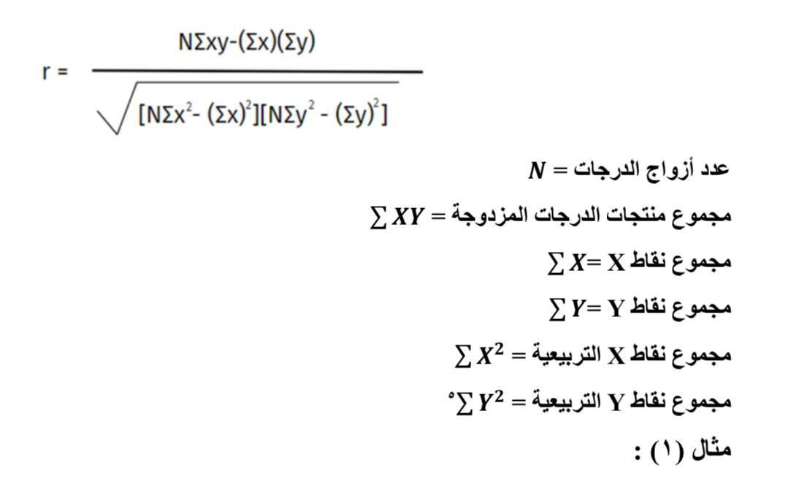

يعد الشكل الانتشاري من ابسط الطرق لعرض بيانات متغيرين يفترض بينهما علاقه ارتباطية اذا يتم من خلاله تكوين فكرة أولية حول اتجاه وقوة العلاقه بين المتغيرين
وبافتراض لدينا متغيرين هما ( X ) و ( Y ) ، على أساس عينة عشوائية من المشاهدات قوامها ( n ) ،
فإن أزواج القيم لهذين المتغيرين تكتب على الشكل الآتي : {(x.Y),..., (X2,Y2), (X1,Y1)}وعند تمثيل أزواج قيم
المتغيرين بواسطة الشكل الانتشاري ،
فإننا سنحصل على أحد الاشكال البيانية التالية ،
و التي من خلالها سيتم التعرف على
طبيعة وقوة العلاقة بين المتغيرين.
يكون الإرتباط الثنائي على نوعين ، هما :
يُعرف الارتباط الخطي البسيط بأنه " درجة العلاقة الارتباطية بين متغيرين فقط هما (y)و(x)
يعرف معامل الارتباط البسيط بأنه القيمه العددية للعلاقات الارتباطية الخطيه بين متغيرين فقط .
تختلف الانواع بإختلاف البيانات والمتغيرات التي سيتم بحث او تحليل الارتباط بينها.
في حالة جمع بيانات عن متغيرين كميين (x,y) يمكن قياس الارتباط بينهما بإستخدام طريقة "بيرسون" ومن الامثله على ذلك :قياس العلاقه بين الوزن والطول
صيغة معامل ارتباط بيرسون
 الارتباط الجزئي هو العلاقه الرياضية الصافية بين متغيرين اثنين فقط مع وجود متغيرات أخرى قيد الدراسة ويمكن حساب هذه العلاقةالرياضية من خلال معامل الارتباط الجزئي
وبالتالي فإن معادلة الارتباط الجزئي :
إن معامل الارتباط الجزئي =0،67وهو يقل عن معامل الارتباط البسيط ب0,13
هو الارتباط الذي يبحث بالعلاقة بين متغير واحد من جهة وبين متغيرين أثنين
مجتمعين معاً من جهة أخرى دون استبعاد أي منها على الإطلاق,
مثال (٤):
احسب معامل الارتباط بين كمية الإنتاج (المتغير التابع) وكمية السماد متغير (مستقل أول ) ودرجات الحرارة متغير (مستقل ثاني )إذا كان معامل الارتباط البسيط بين المتغيرات كما يلي:
الارتباط هو مفهوم إحصائي يقيس العلاقة أو الارتباط بين متغيرين
أو أكثر، معامل الارتباط
غالبًا ما يُشار إليه بالرمز “r” ، يحدد قوة العلاقة واتجاهها.
ملاحظة: معامل الارتباط يتراوح من -1 إلى +1.
منها:
أهم انواع معامل الارتباط
يقيس معدل الارتباط الخطي بين متغيرين مستمرين.
يقيس معدل الارتباط بين ترتيبات المتغيرين بدلاً من القيم الفعلية للمتغيرات.
قانون معامل الارتباط هو مصطلح يشير إلى الصيغة الرياضية التي تستخدم لحساب قيمة معامل الارتباط بين متغيرين. قانون معامل الارتباط الأكثر شيوعًا هو معامل الارتباط النسبي ، ويعتبر مقياسًا للعلاقة الخطية بين متغيرين. يتم تعبير معامل الارتباط النسبي بين -1 و +1.
وبافتراض لدينا متغيرين هما ( X ) و ( Y ) ، على أساس عينة عشوائية من المشاهدات قوامها ( n ) ، فإن أزواج القيم لهذين المتغيرين تكتب على الشكل الآتي : ،(X, Y),..., (X2,Y2), (X1,Y1)وعند تمثيل أزواج قيم المتغيرين بواسطة الشكل الانتشاري ، فإننا سنحصل على أحد الاشكال البيانية التالية ، و التي من خلالها سيتم التعرف على طبيعة وقوة العلاقة بين المتغيرين.